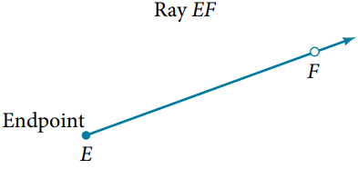
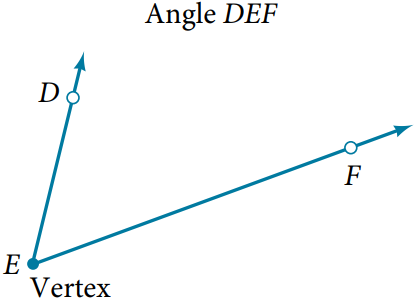
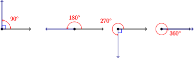
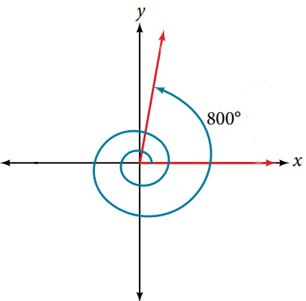

Section 1.1 Angles and Triangles
¶Subsection 1.1.1 Terminology
Definition 1.1.1.
A ray consists of one point on a line and all points extending in one direction from that point. First point is called the endpoint of the ray.
Definition 1.1.3.
An angle is the union of two rays having a common endpoint. The end point is called the vertex of the angle, and the two rays are the sides of the angle.
There are several ways to measure angles. The most common way is degrees.
- One full rotation is \(360^\circ\text{.}\)
- One quarter of a full rotationis \(90^\circ\) and is called a right angle.
- Half a full rotation is \(180^\circ\) and is called a straight line.
Definition 1.1.6.
The measure is determined by rotating a ray starting at one side of the angle, the initial side, to the position of the other side, the terminal side.- A counterclockwise rotation generates a positive measure
- A clockwise rotation generates a negative measure.

Subsection 1.1.2 Coterminal Angles
¶Definition 1.1.9.
Coterminal angles are two angles in standard position that have the same terminal side.Example 1.1.10. Finding Coterminal Angles.
